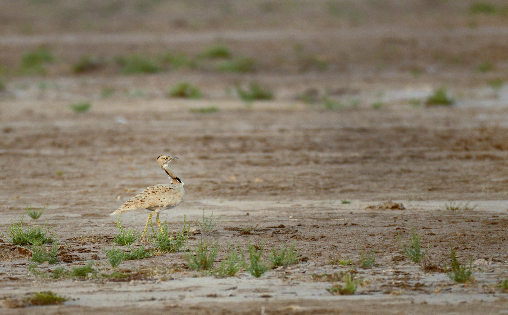

_male_courtship,_Kazakhstan.jpg){kind=link}
Outarde houbara d’Asie (outarde de MacQueen) — Chlamydotis macqueenii
Présence : Oiseau désertique élancé de la famille des outardes. Son aire s’étend de l’est du Sinaï à travers l’Iran et l’Asie centrale jusqu’au désert de Gobi en Mongolie ; les populations septentrionales sont partiellement migratrices et hivernent vers le Pakistan, l’ouest de l’Inde et des parties de la péninsule Arabique. Au Levant, sa présence historique était plus large dans la steppe sèche ; aujourd’hui elle est rare ou seulement de passage dans le contexte libanais face aux migrateurs planeurs. Cette notice fixe Chlamydotis macqueenii uniquement. L’outarde houbara d’Afrique Chlamydotis undulata — Afrique du Nord et îles Canaries — est une espèce distincte élevée en 2003, plus pâle, au plumage de crête différent en parade, d’aire maghrébine et non asiatique–levantine ; elle ne doit pas être mêlée à l’espèce traitée ici.
Cycle de vie et habitats : Le mâle exécute une parade visuelle marquée : il gonfle les plumes du cou et replie la tête dans une « collerette », puis court en lignes ou cercles autour des buissons. L’accouplement est polygame du côté du mâle ; la femelle seule soigne le nid. Elle pond généralement 2–4 œufs dans une cuvette ouverte ; l’incubation dure environ 23 jours. Les poussins nidifuges suivent la mère. Elle préfère déserts et steppes arides à couvert arbustif clairsemé ; le régime mêle graines, baies et insectes, et elle peut se passer d’eau libre si l’humidité des aliments suffit.
Mode de vie : Prudente, elle mise sur le camouflage et s’accroupit à l’approche. Poursuivie, elle s’élève et plane en spirale. Sensible au dérangement au nid par l’homme et le bétail. Les voies de migration évitent les plus hautes chaînes, comme l’a montré le suivi satellitaire ; le calendrier de reproduction est lié aux températures locales qui déclenchent le départ printanier.


Statut de chasse : Dans les pays arabes, l’outarde de MacQueen est en général protégée et sa chasse est strictement encadrée ; l’espèce est menacée à l’échelle mondiale. Au Liban, la loi sur la chasse terrestre n° 580/2004 limite la chasse aux gibiers fixés par le ministre ; tout le reste est protégé toute l’année ; l’outarde ne figure pas parmi les gibiers autorisés en l’absence d’une décision d’ouverture de saison en vigueur. Exceptions documentées uniquement dans des cadres de fauconnerie autorisée : au Qatar, la décision ministérielle n° 7 de 2026 inscrit l’outarde parmi les espèces pouvant être prises uniquement au faucon pendant une période définie (1er septembre 2026 – 15 février 2027), avec interdiction des dispositifs d’appel (ministère de l’Environnement et du Changement climatique via l’agence de presse qatarienne). À Abou Dhabi, dans le cadre de la fauconnerie traditionnelle autorisée selon la décision du Conseil exécutif 5/2021 et les avis de l’Agence de l’environnement – Abou Dhabi, l’outarde peut être prise par des fauconniers licenciés pendant des saisons définies—sans généraliser que toutes les voies de chasse dans l’émirat se limitent à l’outarde.
Statut de conservation : Vulnérable (VU) à l’échelle mondiale auprès de l’Union internationale pour la conservation de la nature (évaluation BirdLife 2021), en raison d’un déclin lié à la chasse et à la dégradation des habitats. Inscrite à l’Annexe I de la CITES et à l’Annexe II de la CMS. Des programmes d’élevage et de lâcher font partie de la réponse conservatoire dans des parties de l’aire.
Traits : La parade du mâle est un comportement nuptial documenté, non un folklore inventé : plumes du cou rabattues sur la tête, pas mesuré, souffle feutré audible de près seulement. Se passer d’eau libre est une vraie adaptation désertique. Icône du patrimoine de fauconnerie et du devoir de conservation à la fois.